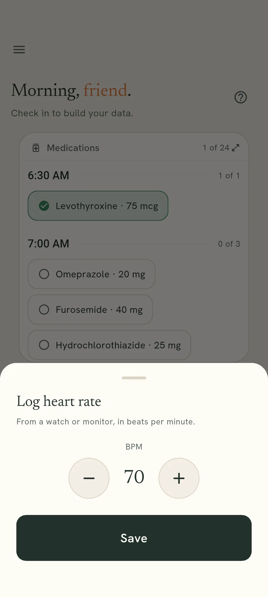

Recording
One number, two taps.
Home holds a tile for each number you record and move on from. Everything slower than that has a page of its own.
What the tiles are for
Sleep, blood pressure, blood sugar, oxygen, heart rate, weight and water each get a tile on the home screen, under a strip of the last seven days. Anything you made up yourself gets one too.
Symptoms and periods are not numbers, so they sit above the tiles as buttons rather than being squeezed into one.
A tile, then that number’s own screen
Each tile shows the latest value, or says there is nothing recorded. Tap it and that number’s own screen opens, with the record button at the bottom.
Why every one of them is always there
A tile that disappeared on a day with nothing in it would leave you unable to tell “I have not recorded this” from “this is not something I track”. Those are different, and only one of them is worth acting on.
So the tile is always in the same place, which is what makes recording stop being a decision. That matters because the value of any of this comes from doing it on the dull days.
Recording one
Tap the tile, then the record button
The tile takes you to that number’s own screen, and the button along the bottom of it opens the entry sheet. The home-screen widget opens the same sheet without going through the app.
Set the number and save
It opens near the one you recorded last, so most days it is already close. Hold plus or minus and it moves faster.

Everything here runs on your own phone
No account, no email address, and no reading of yours in our database. You can check that rather than take our word for it.